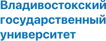

Выставка «Полезный мусор»
АНО «Зелёный маяк» о раздельном сборе отходов и осознанном потреблении

О выставке «Полезный мусор»

Время проведения
С 15 октября по 12 ноября 2022 года
Место проведения
Зимний сад ВВГУ, ул. Гоголя, 41
Время посещения
С 9:00 до 17:00 (будние дни)
Вход
Свободный, по паспорту
Если вы давно хотели понять, зачем сортировать свои отходы и чем они могут быть опасны, то эта выставка для вас.
Мы покажем, какой мусор из нашего ведра совсем не мусор, а полезный ресурс для переработки. И что же конкретно вы можете сделать уже сейчас, чтобы сократить количество своих отходов и оставить после себя чистую планету.
Организатор
Автономная некоммерческая организация экологического просвещения и охраны окружающей среды «Зелёный маяк».
Мы занимаемся развитием раздельного сбора отходов в Приморском крае, экологическим просвещением и экологизацией жизни людей и организаций.
Сделайте пожертвование и помогите нашему проекту!
Наши партнеры
- 